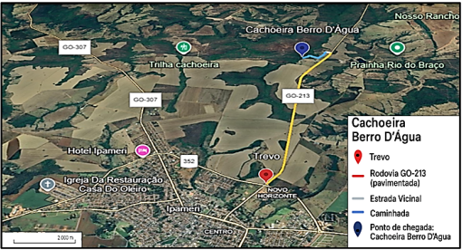
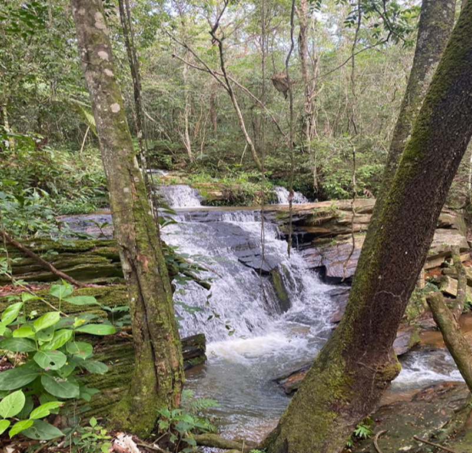
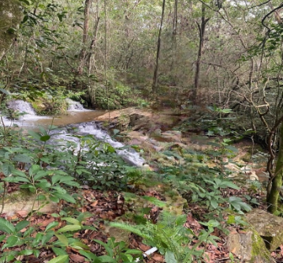
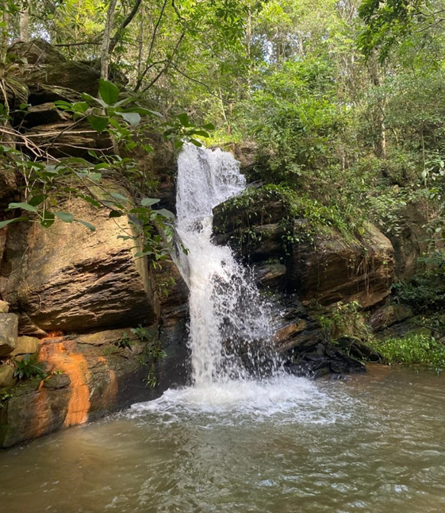
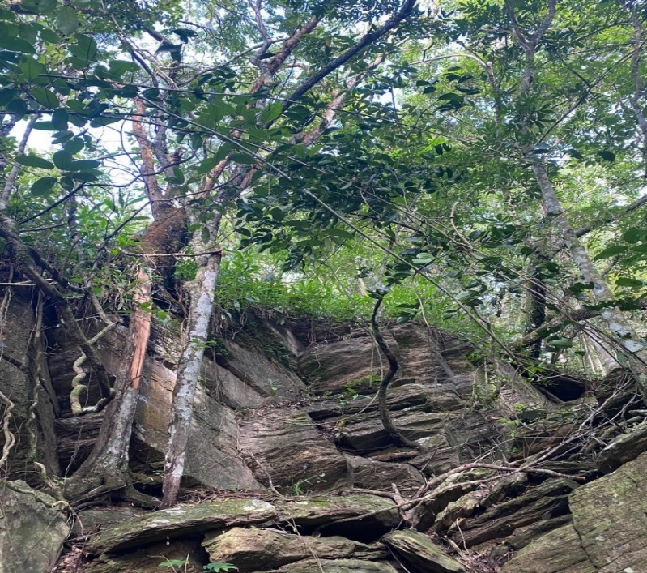
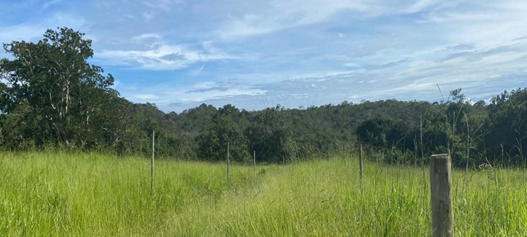
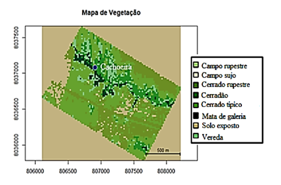

Cachoeira Berro D’Água
Informações Gerais
A Cachoeira Berro D’Água está localizada em uma região de Cerrado, aproximadamente a 7,3 km do centro de Ipameri-Go, com fácil acesso a partir da rodovia GO 213. A trilha apresenta extensão curta, 0,82 Km, permitindo caminhada leve e rápida, 18 minutos, sendo adequada para visitantes iniciantes e para atividades de lazer e educação ambiental.
O poço da cachoeira é de pequena dimensão e não é adequado para banho, servindo apenas para observação e contemplação do ambiente.
Atenção e Recomendações
- Apesar da caminhada ser rápida, há um trecho com vegetação alta que exige atenção, sendo recomendável o uso de perneiras e cuidados redobrados durante a passagem.
- Recomenda-se o uso de roupas leves e confortáveis, calçados fechados e resistentes, aplicação de protetor solar e repelente.
- Mantenha atenção para respeitar o espaço natural, contribuindo para a preservação do ambiente.
Acesso e Percurso
A Tabela 1 apresenta a extensão total do percurso (cerca de 6,3 km, com partida do anel rodoviário - GO 213), de acordo com cada via.
| Tipo de via | Distância |
|---|---|
| Rodovia GO-213 - pavimentada | 5,34 Km |
| Estrada Vicinal | 0,14 Km |
| Caminhada | 0,82 Km |
A Figura 1 mostra uma imagem de satélite da região e do trajeto completo da Cachoeira Berro D’Água.

Experiência na Trilha
O trajeto da trilha oferece a oportunidade de entrar em contato com diversas fitofisionomias do Cerrado, possibilitando ao visitante observar a variedade ecológica da região, que abrange áreas de matas, veredas e formações abertas características do local. Ao longo do encantador trajeto da trilha, há pequenas quedas d'água e poços.



Figuras 3 e 4. Quedas d’água no decorrer da trilha da Cachoeira Berro D’água (dezembro de 2024).
Análise e Cobertura Vegetal
Na Trilha da Cachoeira Berro D’Água, os tipos de vegetação mais comuns são o Cerrado típico e o Cerrado rupestre. Pelo caminho, também dá para perceber áreas usadas como pasto, mostrando que a terra é aproveitada de diferentes formas e que a vegetação nativa sofre influência da ação humana.


A Tabela 2 apresenta os dados referentes à vegetação predominante na região nos anos de 2016 e 2024.
| Ano | Campo rupestre | Campo sujo | Cerrado rupestre | Cerradão | Cerrado típico | Mata de galeria | Solo exposto | Vereda |
|---|---|---|---|---|---|---|---|---|
| 2016 | 0,06% | 14,89% | 7,10% | 24,28% | 0,83% | 0,83% | 50,04% | 2,78% |
| 2024 | 0,05% | 0,03% | 13,91% | 5,92% | 21,97% | 2,13% | 51,32% | 4,64% |
Interpretação das Mudanças na Vegetação (2016–2024)
A análise comparativa entre os anos de 2016 e 2024 evidencia alterações discretas, porém relevantes, na composição da vegetação da Trilha da Cachoeira Berro d’Água.
- O Campo sujo apresentou uma redução considerável, caindo de 14,89% para 0,03%, com tendência ao aumento da densidade da vegetação e ao crescimento de espécies arbustivas e arbóreas.
- O Cerrado rupestre permaneceu relativamente estável, passando de 7,10% em 2016 para 13,91% em 2024, indicando leve retração dessa formação vegetal.
- O Cerrado típico, que em 2016 representava 0,83%, aumentou para 21,95% em 2024, mantendo-se como uma das fitofisionomias significativas do percurso.
- Já o Cerradão apresentou redução significativa, de 24,28% para 5,92%, sugerindo uma instabilidade relativa na vegetação mais densa, essa mudança está ligada principalmente à atividade humana. A perda do Cerradão causa impactos ecológicos importantes, como a diminuição da biodiversidade, mudanças no microclima e maior susceptibilidade do solo à erosão, afetando a estabilidade ambiental da área.
- O Solo exposto, que já representava uma parcela significativa da área (50,04% em 2016), aumentou para 51,32% em 2024, sinalizando a necessidade de monitoramento ambiental contínuo, a fim de avaliar se essa mudança está relacionada a processos erosivos naturais ou à ação antrópica nas bordas da trilha.

De forma geral, apesar das variações ocorridas, os dados indicam um processo de abertura e degradação da vegetação. Essas alterações indicam pressões antrópicas e instabilidade nas formações mais densas, com leve tendência de expansão de áreas hidromórficas (Veredas e Mata de galeria), nas quais apresentaram uma estabilidade relativa, demonstrando uma maior resiliência ambiental e relevância para a conservação da paisagem local. Esse cenário reforça a importância da manutenção de práticas de conservação ambiental para preservar a diversidade ecológica local.